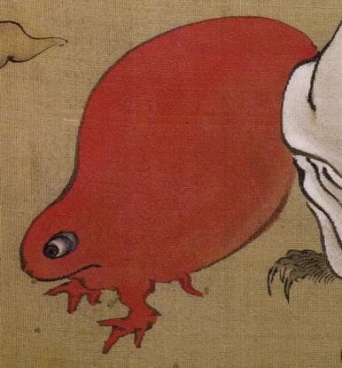

卵形をした赤色の化物。下方が顔になっており、目玉がついている。短い2本の脚で地を這っており、臍の緒のようなものを垂らしている。
著作者：木舜／出典：親書誌：U426_nichibunken_0155：東都画家妖怪画帖；トウトガカヨウカイガチョウ／日付：2010／資源識別子：U426_nichibunken_0155_0001_0002
Copyright (c)2010- International Research Center for Japanese Studies, Kyoto, Japan. All rights reserved.